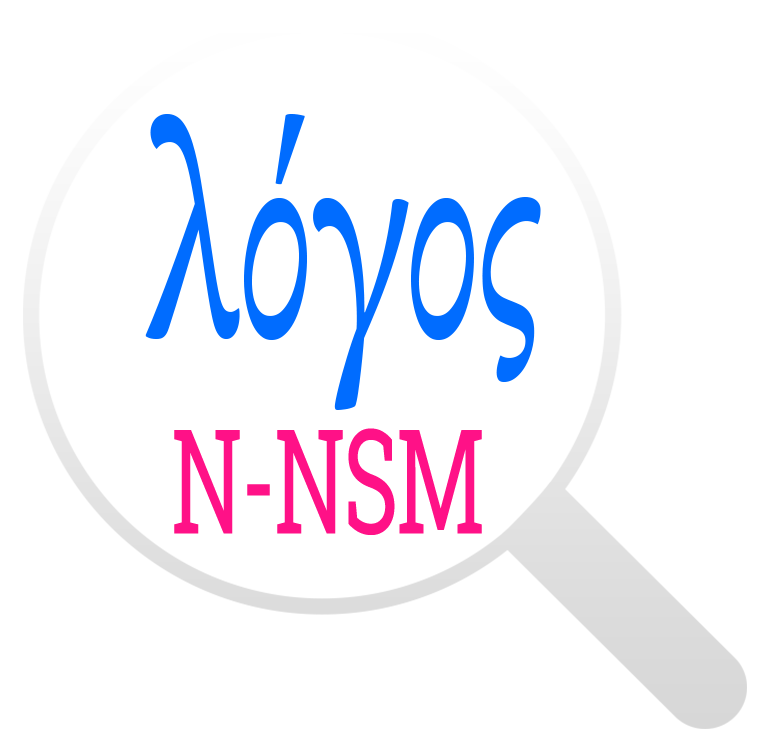

<mat-toolbar>
  <div fxHide.gt-xs>
    <button mat-icon-button (click)="onToggleSidenav()">
      <mat-icon>menu</mat-icon>
    </button>
  </div>
  <div>
    <h2><a href="/">Koine Parser </a></h2>
  </div>
  <div fxFlex fxLayout fxLayoutAlign="end" fxHide.xs>
    <ul fxLayout fxLayoutGap="15px" class="navigation-items">
      <li><a href="https://mastergreek.com/" target="_blank">MasterGreek.com</a></li>
      <li><a href="/contact">Contact</a></li>
      <li><a href="/about">About</a></li>
    </ul>
  </div>
</mat-toolbar>
